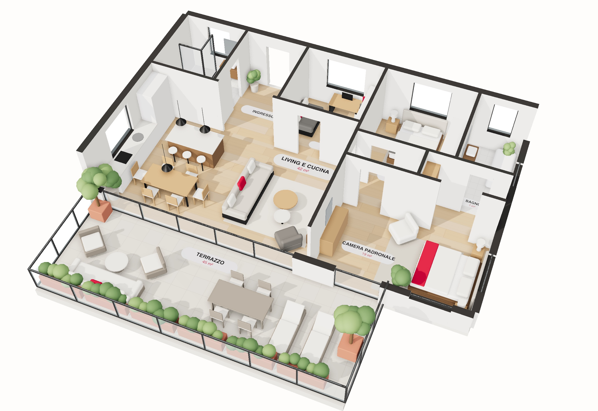
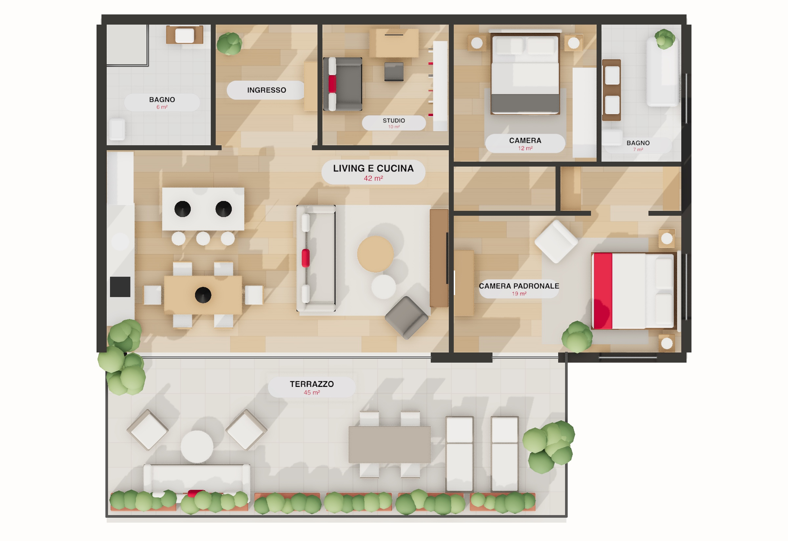

GabettiMilano · Porta RomanaGli ambienti
02 · Gli ambienti
Stanza per stanza


Il terrazzo corre lungo tutto il living: a sera la luce arriva da ovest e attraversa la casa fino alla cucina.
Viale Sabotino 22 · Milano3
Una casa pensata per la luce: tre esposizioni, finestre a tutta altezza e un terrazzo che diventa la stanza più bella della casa da aprile a ottobre.
L'appartamento occupa l'intero settimo piano della scala B, in un edificio del 1962 con portineria e ascensore. Dall'ingresso si apre un living di 42 m² con cucina a vista, affacciato a sud-ovest sul terrazzo: il pavimento in rovere prosegue senza soglie fino alla vetrata.
La zona notte è raccolta sul lato opposto: una camera padronale con bagno privato e cabina armadio, una seconda camera matrimoniale e uno studio che può diventare la terza camera. Il secondo bagno, finestrato, serve la zona giorno.
La ristrutturazione completa del 2019 ha rifatto impianti, serramenti e isolamento del solaio: la casa oggi è in classe B, con riscaldamento autonomo a pavimento e raffrescamento canalizzato.
Completano la proprietà una cantina di 6 m² e un box auto singolo al piano interrato, con accesso diretto dall'ascensore.
Classe energetica B · IPE 68 kWh/m² anno · APE n. 15146-012345/26 valido fino al 2036
Il terrazzo corre lungo tutto il living: a sera la luce arriva da ovest e attraversa la casa fino alla cucina.
Il rilievo dell'appartamento ricostruito e arredato: si vede come le stanze si collegano e come il living si apre per tutta la sua lunghezza sul terrazzo.

Ricostruzione 3D dal rilievo e dalla planimetria; arredi indicativi, a scopo illustrativo.

Pianta indicativa, non in scala. Superfici calpestabili arrotondate; la superficie commerciale comprende i muri e il 30% del terrazzo.
Fonte: visura catastale per immobile del 03/11/2026, letta dall'app e confermata dall'agente. Conformità urbanistica e catastale verificata dal tecnico incaricato.
L'edificio nasce su progetto dello studio di Giovanni Romano, con struttura in cemento armato e facciata in klinker, tipica della Milano del boom.
Il condominio rifà il tetto piano e impermeabilizza i terrazzi dell'ultimo piano.
Ripristino delle facciate e nuovo ascensore che scende fino ai box.
Impianti nuovi, riscaldamento a pavimento, serramenti in legno-alluminio con vetro basso emissivo, isolamento del solaio: da classe F a classe B.
Abitato dai proprietari, in ottimo stato: nessun lavoro necessario prima di entrare.
Documenti disponibili in agenzia: visura e planimetria catastale, atto di provenienza, APE, certificazioni degli impianti 2019, regolamento di condominio, ultimi due bilanci condominiali e verbali di assemblea.
A Porta Romana gli attici ristrutturati con terrazzo sono pochi: negli ultimi dodici mesi ne sono stati venduti sei in un raggio di 800 metri.
La stima combina le quotazioni ufficiali di zona, sei vendite comparabili e le caratteristiche che rendono raro questo immobile: ultimo piano, terrazzo, classe B.
Nota dell'agente. Proponiamo di partire da € 1.050.000: il terrazzo e la classe B giustificano il posizionamento sopra la media degli attici di zona. Se entro 45 giorni non arrivano proposte, rivediamo insieme il prezzo con i dati delle visite.
| Indirizzo | Tipologia | m² | Prezzo | €/m² | Distanza |
|---|---|---|---|---|---|
| Via Bergamo | Attico, terrazzo | 115 | € 995.000 | 8.652 | 350 m |
| Corso Lodi | Ultimo piano | 132 | € 1.020.000 | 7.727 | 520 m |
| Via Crema | Attico, terrazzo | 140 | € 1.240.000 | 8.857 | 610 m |
| Viale Sabotino | Quadrilocale | 120 | € 870.000 | 7.250 | 180 m |
| Via Muratori | Attico | 105 | € 910.000 | 8.667 | 700 m |
| Via Orti | Ultimo piano, terrazzo | 125 | € 1.050.000 | 8.400 | 760 m |
Fonti: quotazioni OMI dell'Agenzia delle Entrate, vendite e annunci rilevati dall'agenzia negli ultimi 12 mesi.
Tra i viali dei bastioni e la Fondazione Prada, Porta Romana è un quartiere di portinerie, mercati coperti e trattorie storiche, oggi rinnovato dal nuovo villaggio olimpico di Scalo Romana. Il centro si raggiunge in dieci minuti di metropolitana.
«Vi accompagno in ogni passo, dalla prima visita al rogito.»

Consulente immobiliare
+39 02 5501 2299 · +39 347 000 0000
giulia.ferrari@agenzia-esempio.it
Visite su appuntamento, anche il sabato.